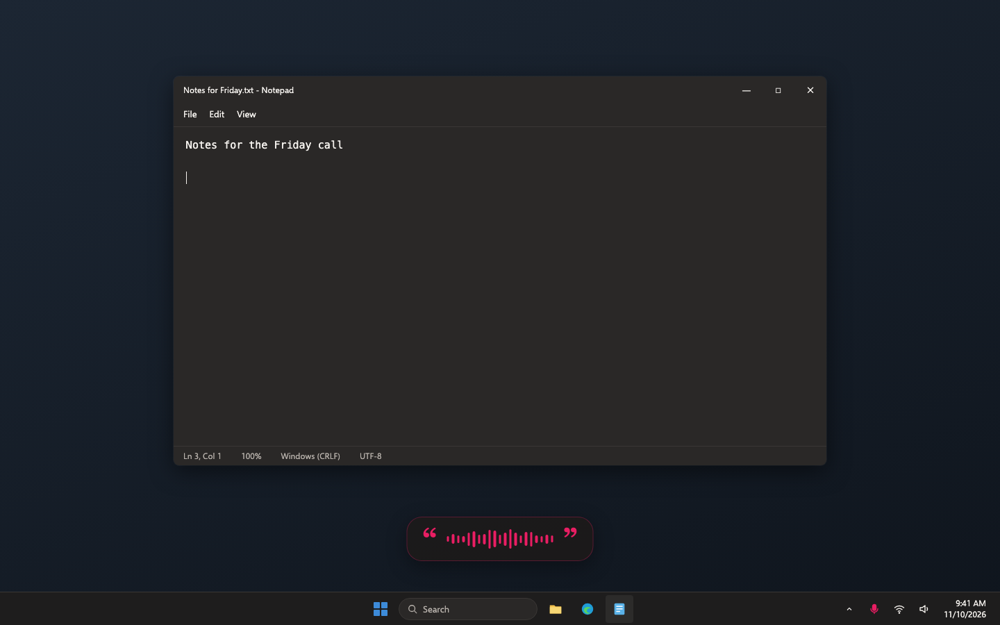
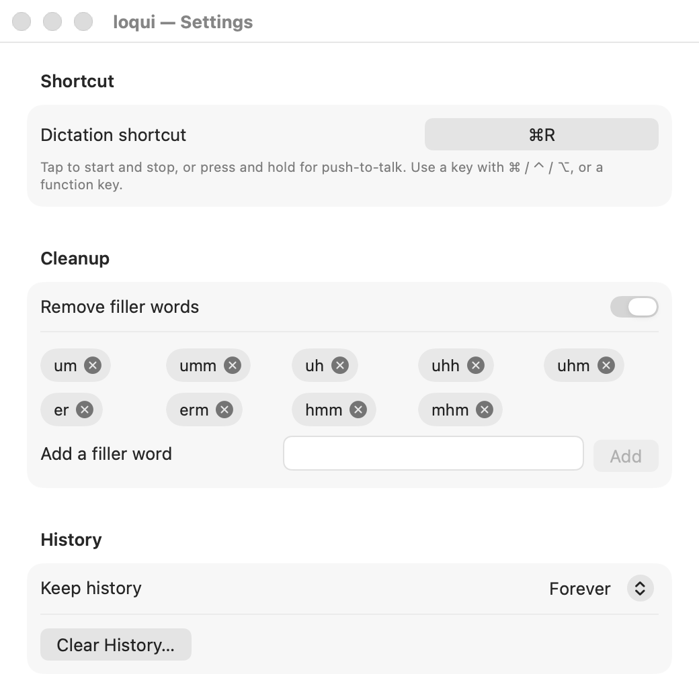
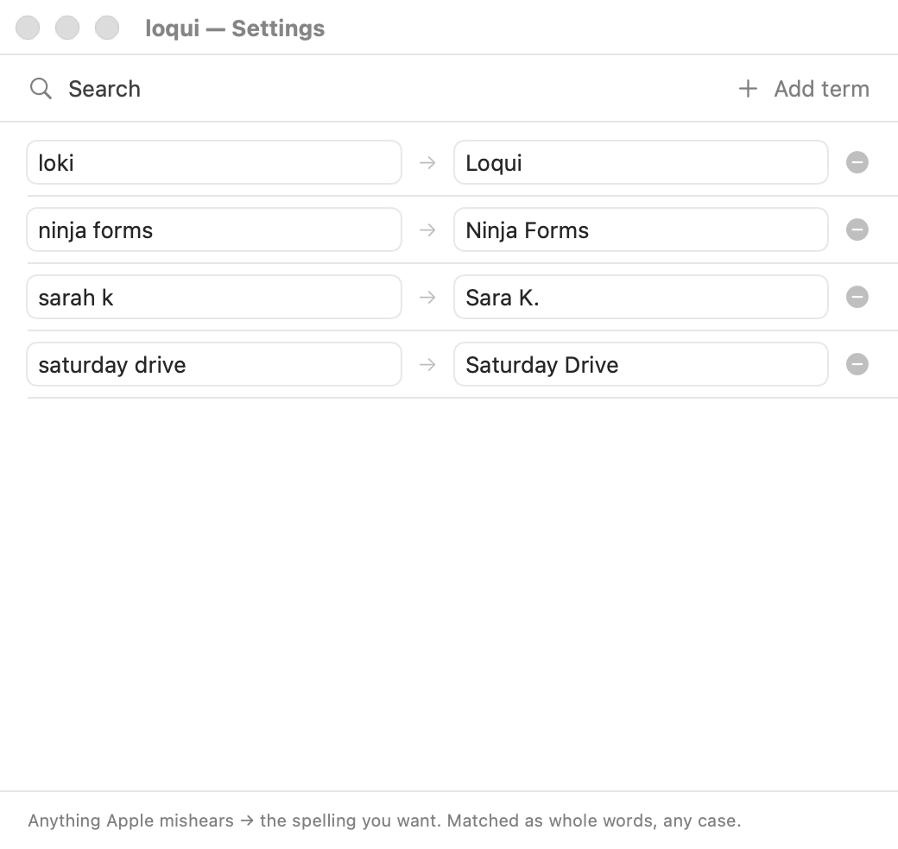
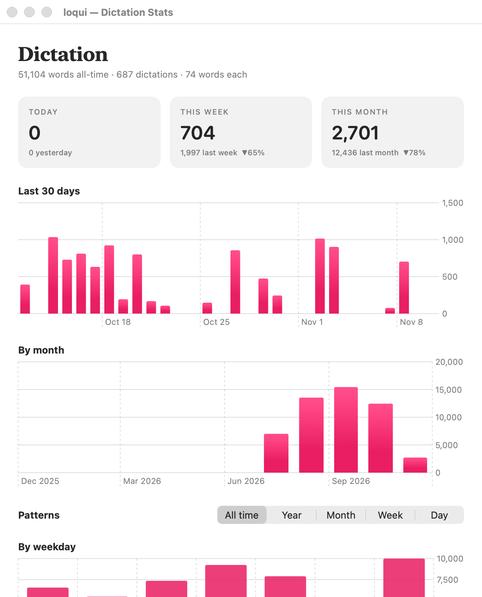
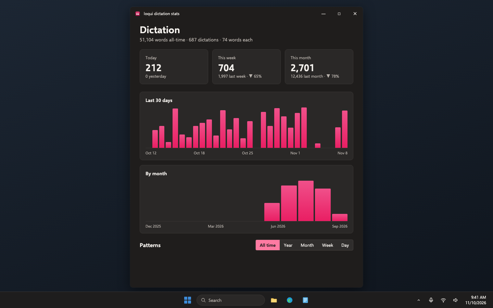
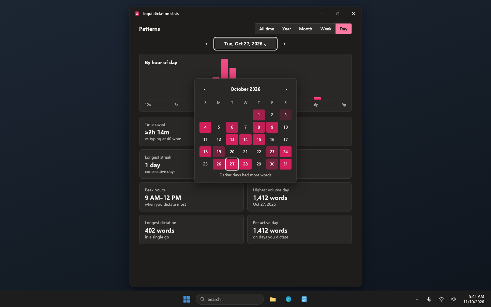
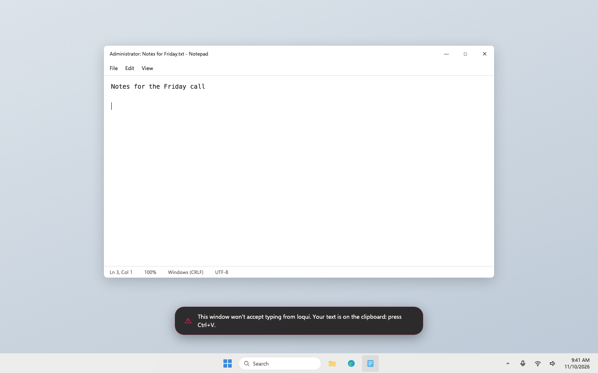
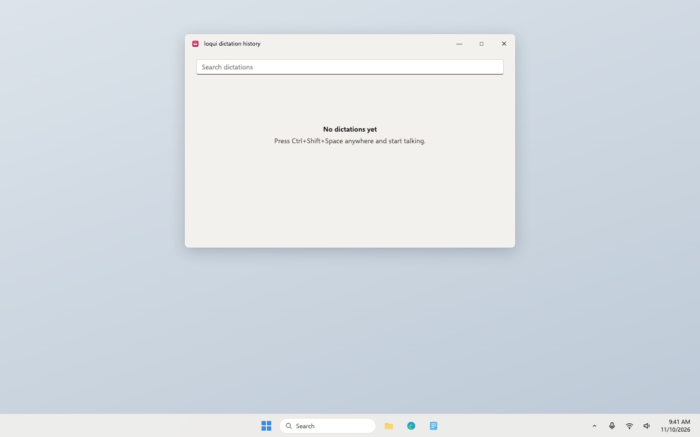
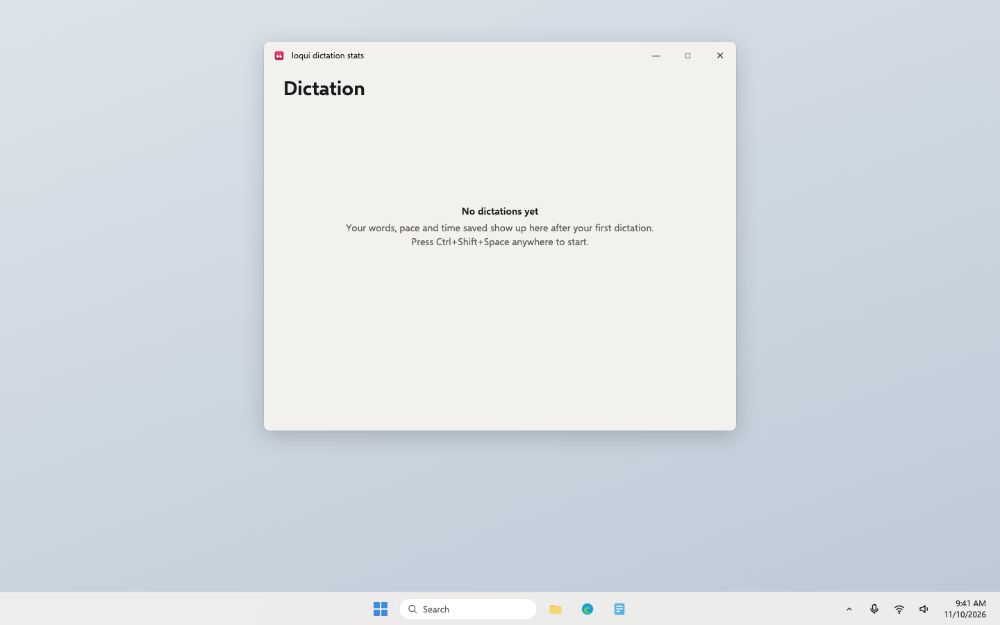

Loqui · Plan · Draft 1, rewritten as one plan · November 12, 2026
Loqui for Windows
Loqui comes to Windows 11: press a shortcut, speak, and clean text lands wherever you're typing, turned into text on the PC itself, exactly as on the Mac.
What approving this does. Your yes on the Windows plan stands; this page now holds all of it. Builders make the rest of Loqui for Windows in one go on one branch, in five parts, then it gets one review and one try: your Windows teammates install it from a link, use it, and see it update itself. When you press Ship, the first public Windows version goes out and the download page offers it. It costs nothing: no Microsoft signing for now and no Parallels, as you decided. It accepts every other recommendation below unless you change one.
Your words
November 10, to Aiva"I need you to have it spin up a plan to create a Windows version of this product."
November 10, on the six step plans"How can I review it and refine it if it doesn't show up as a proper plan under my needs you section. The steps and the series don't give me anything to review or comment on."
November 12, to Aiva"no more features split into series of plans built over days. The Windows version should be ONE plan, built in one go: its parts listed inside the plan for builders on one feature branch, one review, one try, one ship."
What changes
What people on Windows get
- Loqui on Windows 11, on ordinary Intel and AMD PCs and on the newer Arm laptops.
- The same gesture. Tap Ctrl+Shift+Space to start and again to stop, or hold it while you talk. The Mac's dark bubble with the magenta quote marks shows while it listens, and never takes the cursor away.
- Speech turned into text on the PC. English and 24 other European languages, with punctuation and capitals. Audio never leaves the PC.
- The same cleanup. Filler words removed, your dictionary applied, sentences split by a pause healed.
- Everything the Mac has on screen: a welcome window that helps with the microphone, settings with the shortcut recorder and dictionary, history, the Recent menu, and the stats window with the shaded calendar.
- An installer from a link, with no administrator needed, and automatic updates. It isn't signed by Microsoft for now, so Windows shows a "Windows protected your PC" notice the first time; the release notes say how to get past it.
- The same privacy promise. The only thing loqui sends over the internet is the update check.
What you get
- One plan, built in one go. One branch, one review, one try, one ship.
- One product. One project, one issue list, one README, one download page that offers each visitor the right button.
- Two apps that can't drift apart. About 85 cleanup examples and one set of worked stats figures, which the Mac app and the Windows app must both pass on every change.
- Your Windows teammates try it before anyone else, from a link, on the test channel, and every later change reaches them first.
- A safe way out. Only versions you approve reach everyone, and Roll back sends every PC to the last good version.
- The Mac app behaves exactly as today. It only gains tests.
Who it's for: public. Anyone can download Loqui for Windows, with no account.
The parts, and where each stands
Groundwork is done and live. The other five parts are built one after another on one branch; stats and the installer are built side by side. About 35 builder hours in all.
- Groundwork: done. The shared cleanup rules, a Windows app that starts and sits by the clock, the Windows look, and where Loqui runs written down. Live on main.
- Part A, dictation (about 8 hours, being built now). Press the shortcut, speak, and clean text lands at the cursor in any Windows app.
- Part B, settings, history and welcome (about 7 hours). Nothing needs a settings file edited by hand any more.
- Part C, stats (about 7 hours, beside Part D). The Mac's stats window with the calendar picker, with the same figures as the Mac.
- Part D, installer, updates and test channel (about 8 hours, beside Part C). A real installer, updates by themselves, a test channel for your teammates, and Approve and Roll back.
- Part E, launch (about 5 hours). The download page, README, security policy and roadmap cover Windows, and the first public version is readied for your Ship.
How it's tested without a Windows PC here
- GitHub's Windows computers, for free. Every change is built and started on both kinds of Windows PC GitHub offers, Intel/AMD and Arm. GitHub doesn't charge for this on public projects.
- A real dictation on every change, with no person involved. A virtual sound cable gives the machine a microphone. Notepad opens, a script presses the shortcut, Windows' own voice speaks a sentence into the cable, and loqui types it. The check compares Notepad's text word for word, saves a picture of the screen, and fails if loqui opened any network connection.
- Screens checked here on the Mini. Every window also runs in a browser, so keyboard use and an accessibility scan are checked without Windows. The Windows check then photographs each real window, light and dark.
- Shared examples keep the two apps the same. The cleanup rules and the stats figures are written down once; both apps must pass every example.
- Proved before planning. Three runs on GitHub's Windows computers on November 10: a 44-second recording became text in 5.2 seconds on an ordinary Intel/AMD machine and 2.8 seconds on an Arm one, word for word, with nothing online; German, Spanish and French came out right; a pressed shortcut, the microphone and pasting into Notepad all worked end to end; and the window technology opened no internet connections of its own.
- Your Windows teammates, with their own voices. They install each test version from a link and use it day to day. That's the try before you ship.
How it's shipped and updated
- Not signed by Microsoft for now. As you decided. The signing step is built in, behind a switch that stays off. The first time someone runs the installer, Windows shows "Windows protected your PC"; the release notes say to click More info, then Run anyway. A PC with Windows' Smart App Control turned on blocks unsigned apps outright; the release notes say so. Turning signing on later is Microsoft's Artifact Signing at $9.99 a month, set up in about 20 minutes.
- Built by GitHub. Installers are made on GitHub's Windows computers. No release key sits on the Mini or your MacBook.
- The installer. For the person's own account, so no administrator is needed. It includes the speech model, so it's about 500 MB to download once. Loqui appears in Start and in Installed apps. Uninstalling asks whether to also delete history and settings, as the Mac's uninstall does.
- Updates. loqui checks once a day and when you click Check for updates. A new version shows what's new and installs in one click. Updates are about 12 MB because the speech model stays. Every update carries a signature from a Windows update key, and loqui refuses any update that doesn't.
- The test channel is staging. Every change merged into staging becomes a test version within about half an hour, on GitHub's releases page marked as a pre-release and linked from nowhere. That page is the link your teammates install from. A PC with "Get test versions" switched on in Settings gets each new one by itself; everyone else only gets versions you approve. Until launch, every Windows version is numbered 0.0.x.
- Approve and go back. Your Ship publishes the exact test version your teammates tried, unchanged, as the first public version, 0.1.0. If a version turns out bad, Roll back sends every PC to the last good one automatically.
- The Mac is untouched. Windows versions are numbered and listed separately, and GitHub's "latest release" stays the Mac's, so today's Mac links keep working.
Where Loqui runs
- On people's own computers. There is no Loqui server and no account.
- Downloads and update lists on GitHub, free. Installers and the test update list on GitHub's releases page; the download page and the public update list on GitHub's free web hosting, as the Mac's are today; builds and checks on GitHub's Windows computers. Nothing new runs on the Mini or on the jl-platform server.
- On the PC. Settings, history and stats stay in the person's own Windows profile on that PC, as plain text, with the Mac's choices for how long history is kept. Each computer keeps its own stats.
- Written down in Loqui's project file and the platform registry (done with groundwork; Part D and Part E update them).
Screens, before and after
"Before" is the real Mac app or the live download page. "After" is the Windows look drawn in a separate page and photographed, except one real screen from GitHub's Windows machine. Loqui for Windows is a desktop app, so it has no phone size; only the download page has one. Click any picture to see it big.
Part A: listening



Part A: pasted


Part B: welcome


Part B: settings, General



Part B: settings, Dictionary


Part B: history, and the tray menu with Recent


Part C: stats



Part C: patterns and the calendar picker



Part D: install and update


Part E: the download page


Empty, loading, error and no permission




- Empty: history and stats each say "No dictations yet" with the shortcut to press; Recent says "No dictations yet"; an empty dictionary says "Add words loqui mishears"; a period with no dictations says "No dictations in March 2026." instead of eight zero tiles; nothing heard means nothing is pasted; no update says "loqui is up to date".
- Loading: the speech model loads in about 2.5 seconds after loqui starts; a press before then still records and the text arrives once it's ready. While the last words are turned into text, the bubble shows a small spinner. Updates show download progress.
- Error: no microphone ("loqui can't find a microphone"); a window that refuses pasted text (above); a shortcut that would get in the way of typing ("Use Ctrl or Alt with a key, or a function key."); an unreadable settings file ("Your settings file couldn't be read, so defaults are in use", and the file is left alone); a damaged line in the stats record is skipped; no internet for the update check (the daily check fails quietly, Check for updates says "Couldn't reach the update server. Try again later."); an update without a good signature ("This update couldn't be verified, so it wasn't installed."); on the download page, a computer that can't be told shows both buttons.
- No permission: Windows' microphone switch for desktop apps, above; the welcome window leads you to it and loqui never changes it itself. Installing and updating need no administrator.
Risk
Risky: secrets. A new Windows update key: whoever held it could push an update every copy would accept. What keeps it safe: the key lives only as a locked GitHub secret, with your backup in 1Password; publishing to everyone needs your approval; and the plan gets one Codex safety review before it reaches staging. No money: Microsoft signing and Parallels are both left out, as you decided. loqui watches the keyboard as the Mac app does, acting only on the shortcut, and a check proves typed keys never reach any loqui file. The first public version can't be taken back, so it goes out only when you press Ship, and Roll back is proved before then.
Decisions, with my recommendation
Your yes on the Windows plan already said yes to these. The first two are the ones you changed since; the rest stand as you approved them.
1. Signing by Microsoft
- Your choice: no Microsoft signing for now. The signing step is built behind a switch that stays off, and the release notes say how to get past Windows' SmartScreen notice.
- Microsoft's Artifact Signing service, $9.99 a month: your name as publisher, and fewer warnings.
Why: your teammates can get past the notice in two clicks, and turning signing on later is a switch, with no rebuild.
2. Who tries it on Windows
- Your choice: your Windows teammates install it from a link and use it. No Parallels.
- Parallels on your MacBook, about $100 a year.
Why: real people on real Windows PCs, at no cost.
3. The Windows update key
- Recommended: a new key just for Windows updates, kept only as a locked GitHub secret, with a backup you save in 1Password.
- No separate key; trust the download alone.
Why: it's what stops anyone else pushing an update to every copy, and it costs nothing. With Microsoft signing off, it matters more.
4. Which speech engine
- Recommended: NVIDIA's open Parakeet model (version 3), run on the PC's own processor.
- OpenAI's open Whisper model.
- Windows' own speech recognition.
Why: in the experiment it was word-perfect and eight to sixteen times faster than speaking on ordinary processors. Whisper needs a graphics card to be as quick, and Windows' own dictation sends audio to Microsoft.
5. The speech model inside a 500 MB installer
- Recommended: inside the installer, about 500 MB to download once; loqui never fetches anything but the update check.
- A small installer that downloads the model from GitHub on first start.
Why: a first-start download would be a second network request and break the README's promise. Updates stay about 12 MB either way, because the model is kept.
6. How the Windows app is built
- Recommended: Tauri: the parts that talk to Windows (keyboard, microphone, pasting) in Rust, and the windows you look at in the same web tools our other apps use. Built that way in groundwork.
- Microsoft's own C# tools (.NET with WinUI or WPF).
- Electron, as Slack and VS Code use.
Why: the screens can be built and checked on the Mini with no Windows machine, signed updates come built in, and an open-source dictation app (Handy) already ships this way on Windows.
7. Same project or a new one
- Recommended: the same project (jameslaws/loqui), in a windows folder beside the Mac code.
- A separate project, loqui-windows.
Why: one product, one issue list, one README, and the shared examples only stay shared if both apps read the same file.
8. Which Windows
- Recommended: Windows 11 only, on both Intel/AMD and Arm PCs.
- Also Windows 10.
Why: Windows 10 stopped getting security updates for home users in October 2026. It may well work, but we wouldn't test or promise it.
9. The default shortcut
- Recommended: Ctrl+Shift+Space, changeable in Settings.
- Ctrl+R, the direct match for the Mac's Cmd+R.
- F9 on its own.
Why: Ctrl+R reloads the page in every Windows browser, and many laptops need Fn for F9. Ctrl+Shift+Space is free in nearly every app.
10. Your text on the clipboard
- Recommended: leave it on the clipboard like the Mac, but keep it out of Windows' clipboard history and its sync to your Microsoft account.
- Leave it on the clipboard, history and sync included (Windows' default).
- Put back whatever was on the clipboard before.
Why: Windows can upload clipboard contents to Microsoft for your other devices, which would carry dictated text off the PC.
11. Start loqui when you sign in
- Recommended: on by default, with a switch in the welcome window and in Settings.
- Off by default (the Mac has no such setting).
Why: Windows tray apps are expected to start with Windows, and a dictation shortcut is only useful if it's always there.
12. How a PC gets test versions
- Recommended: a "Get test versions" switch in Settings, off by default. Your teammates turn it on.
- A separate "loqui test" app installed beside the normal one.
Why: one app to look after, and turning it off simply waits for the next approved version.
13. One download page or two
- Recommended: one page that puts the visitor's own computer first.
- A separate Windows page linked from the current one.
Why: one product, one page; the privacy and feature sections apply to both.
14. The first Windows version number
- Recommended: 0.1.0, counted separately from the Mac.
- 1.0.0.
- Match the Mac's numbers, releasing both together.
Why: the Mac started at 0.1, and the two apps ship on their own schedules, so tied numbers would force empty releases. Test and practice versions before it are numbered 0.0.x so this number stays free.
15. When it goes public
- Recommended: when your teammates have used the test version daily for about a week with nothing broken. You press Ship.
- As soon as it's built and checked.
Why: it's the first time anyone outside installs it, and a week of real use catches what the checks can't.
16. Where Loqui runs
- Recommended: on people's own computers, with installers, the download page and update lists on GitHub, and the Windows checks on GitHub's free Windows computers.
- Host downloads on a Loqui server or jameslaws.com.
Why: it's how the Mac version already ships, it costs nothing, and it keeps "no server" true.
17. The Windows look
- Recommended: Windows' own font, corners and settings layout, with magenta as the accent, the quote-mark icon and the Mac's dark dictation bubble, as built in groundwork.
- Copy the Mac's look exactly, Apple fonts and controls included.
Why: it feels at home on Windows and still reads as Loqui; Mac-style controls look out of place there.
18. Your data when uninstalling
- Recommended: ask whether to also delete history and settings, as the Mac's uninstall does.
- Always keep them.
- Always delete them.
Why: the same choice the Mac gives, and nothing is deleted without asking.
19. The Microsoft Store
- Recommended: not now. Consider it after launch as a second way in.
- Publish in the Store at the same time.
Why: the Store reviews keyboard-watching apps closely and runs its own updates, which would split the testing; the GitHub download comes first.
20. How the stats charts are drawn
- Recommended: loqui draws its own simple bar charts, matching the Mac's.
- Use a ready-made chart library.
Why: the charts are only bars with hover labels; drawing them keeps the Mac's look and adds nothing to download or keep updated.
Not in this plan
- Microsoft signing (built in, switched off) and Parallels.
- Windows 10, Linux, the Microsoft Store and winget.
- Announcing it anywhere: newsletter, jameslaws.com, social posts.
- Any change to how the Mac app behaves, or how it's built, signed or updated.
- Combining stats from your Mac and your PC; each computer keeps its own.
- Pasting into programs run as administrator; the text is left on the clipboard instead.
- Using a graphics card for speech, or choosing between speech models.
- New features the Mac doesn't have, spoken commands ("new paragraph"), and the Mac's file-only settings (sentence healing words, pause length, cleanup log), which stay in the file on Windows too.
Checkpoints
One try, at Ready to ship, once everything is merged into staging. Your teammates do the hands-on items on their own Windows PCs; you read the pictures and their notes.
- Proved on GitHub's Windows computers (the pull request and the try list's pictures): Notepad holding the spoken sentence for tap, hold and a 60-second dictation; no network connections; every window light and dark with a clean accessibility scan; the Mac and Windows giving the same cleanup and stats figures; the update, test channel, Approve and Roll back runs, all on 0.0.x versions. DICT-01 to DICT-07, MIC-02, PASTE-01, HUD-01, HUD-02, PRIV-01 to PRIV-03, REC-01, PERF-01, MENU-01, A11Y-01, A11Y-02, STAT-07, SIGN-02, INST-03, UPD-02 to UPD-04, CHAN-02 to CHAN-05
- Install from a link (a teammate's Windows PC): open the test version's link from the try list, follow the release notes past "Windows protected your PC", install with no administrator prompt. The welcome window opens; turn Windows' microphone switch off and on and watch the row tick itself. SIGN-01, INST-01, WELC-01, WELC-02, PERF-01
- Dictate (a teammate): in Notepad, tap Ctrl+Shift+Space, say a few sentences with an "um" in them, tap again: clean text lands, filler gone. Hold the shortcut, talk, let go. Turn the microphone switch off and try again: the bubble says what to do. DICT-01, DICT-02, DICT-05, MIC-01, PASTE-02, HUD-01, HUD-02
- Set it up and look back (a teammate): change the shortcut to Ctrl+Alt+D and dictate with it; add "loki" as "Loqui" and say it; search history, copy one, delete one; click one in Recent and paste it; set history to Off and dictate; restart Windows and loqui is by the clock. SET-01 to SET-05, DICTN-01, HIST-01 to HIST-03, RECENT-01
- Stats (a teammate): open Dictation stats; today's words match what was said; pick a day from the shaded calendar; step with the arrows; dictate once with the window open and watch Today change. STAT-01 to STAT-06, STAT-08
- It updates itself (a teammate): turn on Get test versions. When the builder moves the version to 0.1.0, the update window appears within the hour; install it and the dictionary is still there. Then uninstall, choosing to keep history, and install again. UPD-01, CHAN-01, INST-02
- The page and the words (a private preview on the Mini, opened on your MacBook, your phone and a teammate's PC; the pull request): Windows sees "Download for Windows" first; the Mac and the phone see today's page with Windows added; the README, security policy, roadmap and contributing notes read right for Windows. LAUNCH-01 to LAUNCH-06, A11Y-03
- Ship (you press Ship): the tested version is published unchanged as 0.1.0; on a teammate's PC, the live page's Download for Windows installs it and it dictates; on your MacBook, the Mac download still gets the Mac app. LAUNCH-07 to LAUNCH-09, CHAN-05
For the agents
How this plan is built
- One plan, one branch. Every part builds on the feature branch
windows-version(made from staging). Each builder works on its own local branch and pushes withgit pull --rebase origin windows-versionthengit push origin HEAD:windows-version; never check outwindows-versionitself. - One pull request from
windows-versioninto staging. Part A's builder opens it as a draft; it's marked ready when every part is green. One review of the whole change by a fresh reviewer from the other company's AI, plus the one Codex safety review a risky plan gets (safety review loqui windows-version), before it merges into staging. One try:plans/windows-version/try.mdwith pictures inplans/windows-version/built/; each part adds its own section and pictures, and Part E's builder makes it one list. One ship. - Groundwork is done (live on main, PR #3 and fix #6): shared cleanup examples, the Windows app shell, the look as tokens, CI on both Windows runners, PROJECT.md and the registry row.
- Order: A, then B, then C and D side by side (two builders), then E. A part starts when the part it needs is green on
windows-version. - Checks: every ID in this folder's
checks.md, grouped by part. Groundwork's checks (WINBASE, CLEAN, PLACE-01, LOOK-01) keep passing. The old overview's WIN-01 to WIN-06 are retired. - Stack: Tauri 2 with Rust pinned, React, Vite and TypeScript, pnpm, Biome, Vitest and Playwright (groundwork); speech through sherpa-onnx with Parakeet TDT 0.6B v3 and the Silero voice activity model, pinned by SHA-256.
- Shared interfaces and owners:
shared/cleanup-cases.json(add cases only; changing an existing expected output needs achanges.mdentry).windows/design/tokens.json(screens use only these; a new token goes to James through the Lead).%LOCALAPPDATA%\Loqui\settings.json(A creates it; B addsstartAtSignInandonboarded; D addschannel).history.jsonlanddictation-log.jsonlin the Mac's formats (A; read by B and C).loqui-coreowns all file reading and writing; screens never touch files. - Version numbers: the version lives in
windows/package.json. Every Windows version before the ship is 0.0.x, test and drill versions included. The number inside the app always equals the number on its release and in the update list, so Promote can copy files unchanged without a PC being offered the version it already has. So every change merged into staging that toucheswindows/raises the number: CI fails a pull request that toucheswindows/without a higher version than staging's, and the release workflow refuses a number that already exists. The one pull request merges as 0.0.x. After the teammates have installed it, Part E's builder merges a one-line change moving the version to 0.1.0: that is the update they see arrive, the version they use, and the one Ship publishes. A fix after that makes 0.1.1 the first public number. - Can't be undone: a published update reaching every PC on its channel; the first public release at the ship.
- Staging and rollback: until Part D lands, staging is the test build attached to each Windows check run. From Part D on, staging is the test channel (pre-releases and the test update list), production is the public update list, with Promote and Roll back. The page is previewed privately on the Mini before merge; going back on the page is a revert; going back on the app is Roll back. Part D and Part E record this in PROJECT.md.
- Experiments (2026-11-10): speech engine on Intel/AMD and Arm, shortcut, microphone, engine and paste into Notepad, a bare Tauri window's network use.
Part A: dictation (being built; needs groundwork)
- Checks: DICT-01 to DICT-07, MIC-01, MIC-02, PASTE-01, PASTE-02, HUD-01, HUD-02, PRIV-01, PRIV-02, REC-01, PERF-01.
- Owns:
windows/crates/loqui-core/src/voice_key.rs,dictation.rs,records.rs,settings.rs,shortcut.rs;windows/crates/loqui-speech/**;windows/src-tauri/src/hook.rs,mic.rs,speech.rs,paste.rs,bubble.rs,dictation.rs; the bubble inwindows/ui;windows/e2e/**;windows/scripts/fetch-speech.mjs;shared/fixtures/**;.github/workflows/windows.yml(later parts add steps to it). - Existing code to reuse: Mac
VoiceKeyService.swift(gesture states, 0.35 s hold threshold, exact modifier match on key-down, key-up matched by key code only while a gesture is in flight, autorepeat swallowed, reset on a lost key-up; watchdog 120 s silence and 30 min ceiling; 80 ms pause before paste; bubble timings 0.9 s and 1.8 s; log lines).VoiceTranscriber.swift(timed healing from segment gaps; groundwork'stimed_heal.rs).DictationLog.swift,TranscriptionHistory.swift,CleanupAudit.swiftfor file formats, retention and the 2 MB audit log limit. The experiment code onplan/windows-dictationinplans/windows-dictation/experiment/: hook thread, SendInput, clipboard formats, Notepad readback, VB-CABLE and microphone consent setup. - Keyboard:
WH_KEYBOARD_LLon its own thread with a message loop; the callback only matches and posts to a channel, because Windows silently removes slow hooks. Accept injected key events (the checks rely on them) but tag loqui's own Ctrl+V with a marker indwExtraInfoand ignore it. Allowed shortcuts mirror the Mac: Ctrl or Alt with a key, or a bare F1 to F24. - Audio and speech: WASAPI shared mode on the default communications microphone, resampled to 16 kHz mono; rebuild on device change; log starvation over 5 s. sherpa-onnx C API (v2.0.1 shared build) with Parakeet TDT 0.6B v3 int8 and Silero, both pinned by SHA-256. Cut segments at pauses while recording so only the last segment is decoded after release; feed segment gaps to the timed heal. Load the model once at start on a background thread and keep it.
- Paste: clipboard set with Unicode text plus
CanIncludeInClipboardHistoryandCanUploadToCloudClipboardset to 0 (decision 10). Then SendInput Ctrl+V. If the foreground process runs at a higher integrity level than loqui, skip the paste and show the clipboard message. - Bubble: a second Tauri window: transparent, always on top, not in the taskbar, never activated, ignores the mouse; bottom centre of the monitor holding the foreground window; tokens only.
- Model files: the test build packs the model from the sherpa-onnx release, checked against its SHA-256 in CI, in the app's
models\folder; Part D's installer keeps it across updates. The app never downloads anything. - Checks on Windows:
windows/e2e/drives the run onwindows-latestwith VB-CABLE (pinned by SHA-256) and the microphone consent keys. The Arm runner has no proven virtual cable driver, so its run uses a test-only file audio source compiled only into test builds (a Cargo feature); CI fails if a release build contains it. Network watch: list TCP connections owned by loqui and its web view processes for the whole run; any non-loopback address fails PRIV-01. Part D extends it for PRIV-03. - Data and outside services: none at run time. CI downloads the engine, model and VB-CABLE, each pinned by SHA-256.
Part B: settings, history and welcome (needs A)
- Checks: WELC-01, WELC-02, SET-01 to SET-05, DICTN-01, HIST-01 to HIST-03, RECENT-01, MENU-01, A11Y-01.
- Owns: the welcome, settings and history screens in
windows/ui/src/;windows/src-tauri/src/tray.rs(the whole tray menu) and the code that opens each window; the typed command layer between screens and Rust (defined once inloqui-core, exported as TypeScript types); thestartAtSignInandonboardedfields; the screenshot steps it adds towindows.yml. - Existing code to reuse: Mac
Onboarding.swift(rows, 1 s polling so a grant ticks off by itself, Finish only when the microphone is allowed),SettingsView.swift(what General and Dictionary hold; save writes only the fields this window owns and keeps the rest ofcleanup.json),Shortcut.swift(acceptable combinations, display text),HistoryView.swift,TranscriptionHistory.swift(retention meanings, prune on launch and on change),LoquiApp.swift(menu items; Recent: last five, one line, 48 characters then an ellipsis, click copies). - Screens: React in
windows/ui, tokens only, one Tauri window per screen opened from the tray (one instance each; reopening focuses it). Screens talk to Rust only through the typed commands; screens never read files. - Room for C and D: leave the Dictation stats and Check for updates menu items wired to one stub handler each, and a marked place in Settings, General for D's Updates card, so C and D each change only their own handler and file.
- Shortcut recorder: pauses the global hook while recording (as the Mac does) and resumes on save or cancel.
- Microphone check: read Windows' consent state for desktop apps; "Open microphone settings" opens
ms-settings:privacy-microphone. loqui never changes the switch itself. - Start at sign-in: the per-user Run key (
HKCU\Software\Microsoft\Windows\CurrentVersion\Run), written and removed by the switch; no administrator. - Testing without Windows: every screen also runs in a browser against a fake backend, so Vitest and Playwright (with an axe accessibility scan) run on the Mini and on Linux CI. The Windows check then opens each real window on
windows-latestand photographs it, light and dark. - Can't be undone: Clear history deletes the history file, after a confirmation, as on the Mac.
Part C: stats (needs A and B; side by side with D)
- Checks: STAT-01 to STAT-08, A11Y-02.
- Owns:
shared/stats-cases.json; a new stats module inloqui-coreand the stats command's result type (exported to TypeScript); the stats screen inwindows/ui/src/; the Dictation stats menu handler only; on the Mac, a test seam inSources/loqui/StatsView.swift(no behaviour change) and stats tests inTests/loquiTests/. - Existing code to reuse: Mac
StatsView.swift(StatsModel: grains, offsets, period labels, comparisons, streaks, peak hours, time saved against 40 words a minute typing, pace only from entries with seconds, the "No dictations in …" rule, tile retitling under a filter) andPeriodPicker.swift(day and week grids, month grid, year list; shading on an absolute scale against the busiest day or month ever, with a square root so quiet days still show; "Picks the whole week"). - Same numbers:
shared/stats-cases.jsonholds one sample dictation log, a fixed "now", a fixed time zone and first weekday, and the expected figures for every card, chart total and tile at each grain. The Mac tests StatsModel through the seam; Windows computes the figures inloqui-coreand tests them there; the screen only draws them. - Charts: plain SVG bars in React using the tokens; hover and keyboard focus show the Mac's tooltip text; each bar has an accessible label ("Oct 27: 1,412 words").
- Testing without Windows: as Part B; the Windows check photographs the real window light and dark.
- Data: reads
dictation-log.jsonlonly. No network.
Part D: installer, updates and test channel (needs A and B; side by side with C)
- Checks: SIGN-01, SIGN-02, INST-01 to INST-03, UPD-01 to UPD-04, CHAN-01 to CHAN-05, PRIV-03.
- Owns: the bundle and updater settings in
windows/src-tauri/tauri.conf.jsonand the installer hooks; the update code inwindows/src-tauri; the Updates card in Settings (its own file, in B's marked place) and the Check for updates menu handler only; thechannelfield;.github/workflows/windows-release.yml,windows-promote.yml,windows-rollback.yml;docs/windows/stable.json; the How it ships lines in PROJECT.md. - Existing code to reuse:
release.sh(publish the release before the update list; the list at a stable address, never "latest", because "latest" skips pre-releases),uninstall.sh(ask before deleting data), the vault note on Loqui hosting and updates (where release keys live; never copy keys anywhere). - Installer: Tauri's NSIS bundle,
installMode: currentUser. Two files per version: the full installer (with the model) for downloads, and an update installer without the model for the update lists. The model lives in its own folder with a version file; installers add it only when missing or changed and the update installer never removes it. The uninstaller asks about%LOCALAPPDATA%\Loqui. - Signing switch (decision 1): a repository setting, off. When on, the workflow signs the app, its DLLs, both installers and the uninstaller through Azure Artifact Signing with a federated login (no stored secret) and a timestamp, verifies each with
signtool verify /pa, and refuses to publish anything unsigned (SIGN-02). When off, it publishes unsigned and puts the SmartScreen steps at the top of the release notes: "Windows protected your PC" → More info → Run anyway, and that Smart App Control blocks unsigned apps (SIGN-01). Nothing claims a publisher while it's off. - Updates: Tauri's updater plugin with the new public key built in. Checks once a day and on demand. The private key is a GitHub Actions secret in a
releaseenvironment, generated without being printed, backed up by James in 1Password, then the local copy deleted. That backup is James's only setup task; the builder writes him a short note for it through the Lead. - Test update list off GitHub Pages: Pages publishes
docs/from main, which nothing reaches before the ship, so a test list committed todocs/would never be served while teammates try it. The test list is a file on one fixed GitHub pre-release used only for it (for example tagwindows-test-feed, filebeta.json), replaced by each test release. The public list stayshttps://jameslaws.github.io/loqui/windows/stable.json. The Settings switch chooses between them. - Test channel:
windows-release.ymlruns on every push to staging that toucheswindows/: build, (sign if on), publish a GitHub pre-releasewindows-v0.0.N-testwith--latest=false, then replace the test list (release first, list second). - Promote and Roll back:
windows-promote.ymlis hand-started behind a GitHub environment that needs James's approval; it copies the tested pre-release's exact files (checksums compared) to awindows-v…release, still--latest=false, and writesstable.json.windows-rollback.ymlrebuilds the last good tag's code as the next patch number and promotes it, because installed copies only move forward. - Drills before the ship: GitHub only lets a workflow be started by hand once it's on main, and nothing reaches main before the ship. So build Promote and Roll back as shared steps, and prove them on
windows-versionthrough a drill run (for example started by pushing a drill tag) that uses 0.0.x versions and a drill list, never the public list or the Mac's release. Link the drill runs from the pull request (CHAN-03, CHAN-04). - Privacy check: PRIV-03 extends Part A's network watch over a full install, start, update check and update: only the update list's host and GitHub's release download hosts appear, and only during checks and downloads.
- Data and outside services: GitHub Releases and Pages. No user data leaves the PC.
- Can't be undone: a published update reaches every PC on that channel; that's why the public list needs James's approval and Roll back exists. Drill releases stay on GitHub's releases page, unlinked.
Part E: launch (needs B, C and D)
- Checks: LAUNCH-01 to LAUNCH-09, A11Y-03.
- Owns:
docs/index.html,docs/assets/**,docs/windows/download.html, README.md, SECURITY.md, ROADMAP.md, CONTRIBUTING.md, the download-page step it adds towindows-promote.yml, the one-line version move to 0.1.0 after the merge (see Version numbers), the launch lines in PROJECT.md and the Loqui row in the platform registry (~/Developer/platform/PLACEMENT.md, its own repo); and assembling the onetry.md. - Existing code to reuse:
docs/index.html(its tokens, AA notes and structure; keep its look); the page wording changes are inplans/windows-launch/shoot.mjsonplan/windows-launch; README sections Install, Permissions, Privacy, Security model, Uninstall, Requirements, Development. - Choosing the button: a few lines of script reading the platform; both buttons in the HTML, so with no script both show. Windows pictures for the page come from Part B's and Part C's Windows check pictures.
- The Windows link: the button points at
docs/windows/download.html, a tiny page that forwards to the current public installer; Promote rewrites it withstable.jsonon every promote. Until the first Promote it says the Windows download is on its way and links to the releases page, so it never points nowhere. GitHub's "latest release" stays the Mac's. - Words: README, SECURITY.md and the release notes say plainly that the Windows app isn't signed by Microsoft yet and how to get past SmartScreen; they never claim a publisher.
- Staging: the changed page is served as a private workspace preview on the Mini (
ws, just James) before merge, because Pages publishesdocs/only from main. - The ship, for the shipper: James presses Ship on the tested staging commit. Merge staging into main, then run Promote on the tested 0.1.0 test version, which James approves; the page's Windows button then reaches it. Check LAUNCH-07 to LAUNCH-09 and CHAN-05 on the live page.